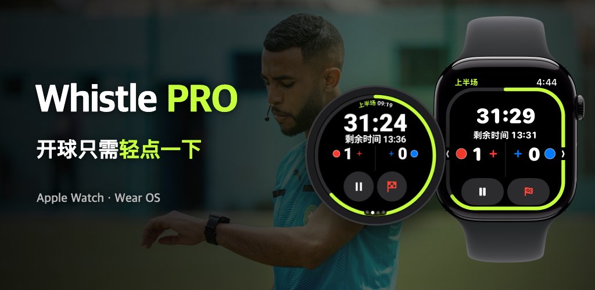

Whistle PRO
戴上手表，直接走进球场。
为足球裁判打造的 Apple Watch 和 Wear OS 比赛计时与记录工具。

戴上手表，直接走进球场。
为足球裁判打造的 Apple Watch 和 Wear OS 比赛计时与记录工具。

业余比赛、俱乐部、青少年联赛都适用。无需手机，一块手表就能完成整场比赛。
跑动中用手表按键、表冠或表圈暂停/继续、记录进球或撤销（PRO）。支持 Apple Watch 以及 Galaxy Watch 等 Wear OS 手表。
上下半场、分节赛、加时赛和点球大战都支持。单独计算暂停时间，并给出建议补时。
比赛即将结束、中场休息结束、暂时罚离的球员可以返场时，手腕振动提醒你。
记录进球、黄牌、红牌和换人，并附上球队和号码。第二张黄牌自动记为罚令出场。
以 FIFA 标准为基础，修改比赛时长、人数、换人上限和暂时罚离，保存为预设。
心率、移动距离、冲刺和移动热图随比赛记录一起保存，并作为体能训练存入“健康”App（iPhone）或 Health Connect（Android）。
比赛结束后，可在手机上立即分享整理好进球、红黄牌、换人和所用规则的报告。
在比赛详情的“地图”标签中对准球场四角，就能在卫星照片上看到你的移动热图。
对准了球场的比赛，可以把你的跑动做成 15 秒回放视频，直接发到社交媒体。
开球前在手表上选择两队球衣颜色，赛后也可以在手机上修改。
执法必需的功能免费，记录和分析交给 PRO。
无需订阅
按月或按年 · 免费试用 7 天
可在手机 App 中订阅，并随时在 App Store 或 Google Play 账户设置中取消。
没有账户，也没有服务器。比赛记录和健康数据只在你的手表和手机之间传输。
查看隐私政策